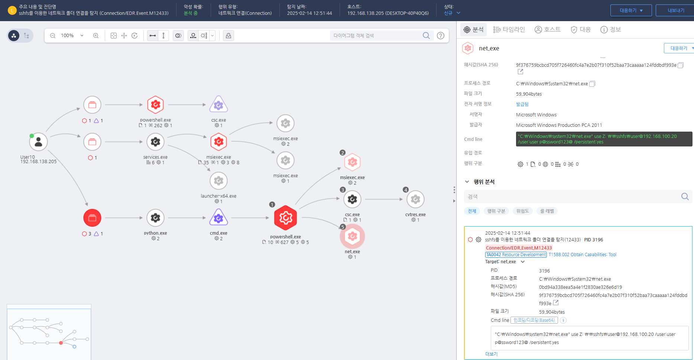

T1078.003.04 시스템 로컬 계정 사용(sshfs)
D3FEND
MITRE ATT&CK 액션을 기준으로 대응 방안을 작성
Detection
탐지 방법 작성, EFR과 무관하게 해당 Action에 대한 탐지 방법 명시
Detection(EDR)

Response
보안 위험을 최소화하기 위해 SSHFS의 사용을 제한하거나 금지하고 필요한 경우, 신뢰할 수 있는 사용자만 사용하도록 제한합니다.
Mitigations
1. 애플리케이션 자격 증명 관리
- 비밀번호 관리 정책을 강화하여 애플리케이션 자격 증명에 대한 강력한 비밀번호와 주기적인 변경을 요구합니다.
- 비밀번호 관리 도구 또는 환경 변수를 사용하여 애플리케이션 자격 증명을 안전하게 저장하고 관리합니다.
- 애플리케이션에서 하드코딩된 자격 증명을 제거하고, 안전한 인증 방법을 사용하는 것을 권장합니다.
2. 멀티팩터 인증(MFA)
- 가능한 경우 멀티팩터 인증(MFA) 을 활성화하여 애플리케이션 접근 시 단순히 계정과 비밀번호 외에도 추가적인 인증 단계를 요구합니다.
- 애플리케이션에서 MFA를 지원하는 경우 이를 강제하여 인증 절차를 강화합니다.
3. 애플리케이션 보안 강화
- 애플리케이션 내 중요한 데이터와 자격 증명은 암호화하여 저장하고, 외부에서의 접근을 차단합니다.
- 권한 관리를 통해 애플리케이션의 각 사용자 및 서비스가 필요한 최소한의 권한만을 부여하도록 설정합니다.
- API 접근 제어를 강화하여 애플리케이션 API에서 사용되는 자격 증명을 안전하게 보호합니다.
4. 로그 및 모니터링
- 애플리케이션 로그를 활성화하여 모든 로그인 시도와 자격 증명 사용 내역을 기록하고 모니터링합니다.
- SIEM(Security Information and Event Management) 시스템을 사용하여 애플리케이션 계정의 비정상적인 접근 시도를 실시간으로 탐지합니다.
- 사용자 행동 분석(UEBA) 도구를 사용하여 애플리케이션 접근 패턴을 분석하고, 의심스러운 활동을 식별합니다.
5. 사용자 교육 및 인식 제고
- 애플리케이션 자격 증명 및 접근에 관한 보안 교육을 통해 사용자가 비밀번호나 자격 증명을 안전하게 다루도록 교육합니다.
- 정기적인 보안 인식 교육을 통해 사용자와 관리자들이 애플리케이션 접근 보안을 강화하는 방법을 숙지하도록 합니다.
Affected Techniques
Action 실행시 함께 영향을 받는 다른 Techniqes
| ATT&CK |
| T1588.002 |
| T1078.003 |
|D3FEND|
|:-----------:|